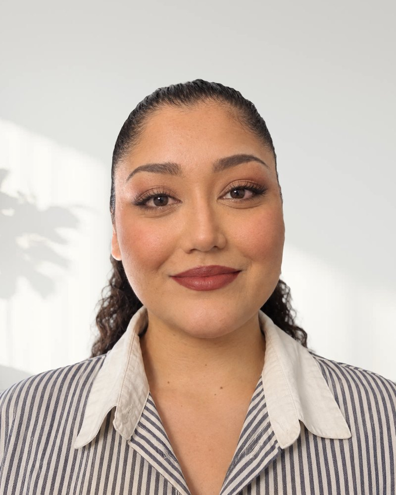

Coordonner le suivi
Elle fait le lien entre les jeunes et l'équipe pour que chaque parcours avance sans accroc.
- Lien entre les jeunes et l’équipe
- Suivi des prochaines étapes
- Organisation des rendez-vous
Premier rendez-vous gratuit et sans engagement

Responsable du pôle coordination
Aylin gère le pôle coordination d'Insertio. Elle fait le lien entre les jeunes et l'équipe, les accompagne sur le plan linguistique et les aide à avancer dans leurs démarches.
Souvent la première personne que les jeunes rencontrent chez Insertio.
Elle fait le lien entre les jeunes et l'équipe pour que chaque parcours avance sans accroc.
Pour que la langue ne soit jamais un obstacle aux démarches.
Elle accompagne les inscriptions et les démarches, étape par étape.
Des engagements solidaires en Suisse et à l'étranger.
Insertio, Genève
Coordination du suivi, accompagnement linguistique et démarches des jeunes.
TIKA
Participation à une mission d'aide humanitaire en Colombie.
Croix-Rouge genevoise
Engagement auprès de personnes en situation de vulnérabilité.
Des études en sciences sociales et en histoire de l'art.
Université de Strasbourg
Parcours Histoire de l'art.
Université de Toulouse
Une formation en sociologie qui nourrit son regard sur les parcours des jeunes.
Parlés couramment, niveau C1 – C2
Quatre langues qui lui permettent d’accompagner chaque jeune dans une langue qu’il comprend.
Les programmes dans lesquels tu peux être accompagné·e par Aylin.
Réserve un premier rendez-vous gratuit et sans engagement pour faire le point sur ta situation.
Prendre rendez-vous